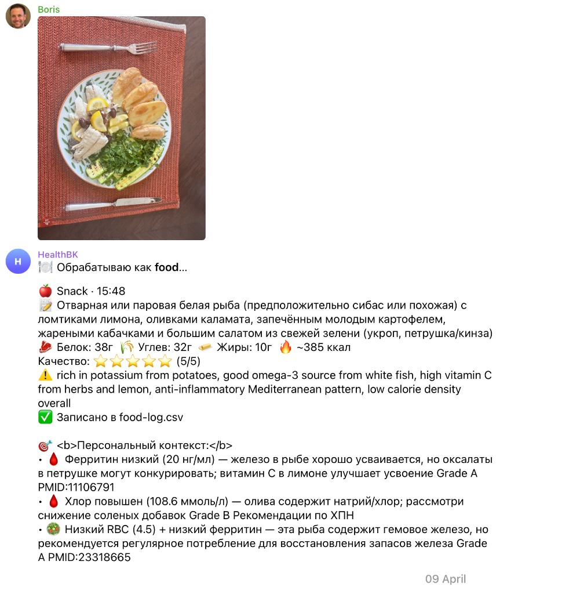
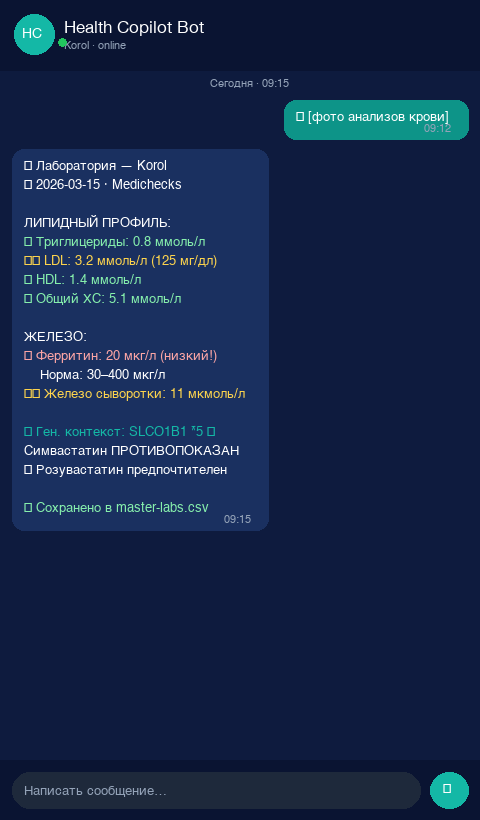
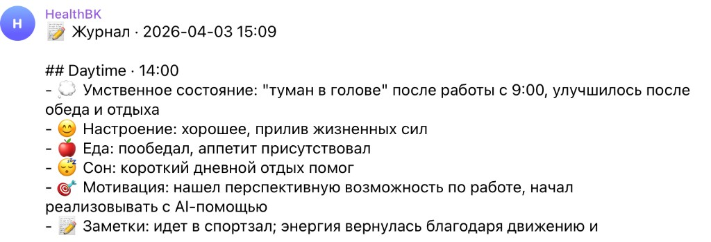
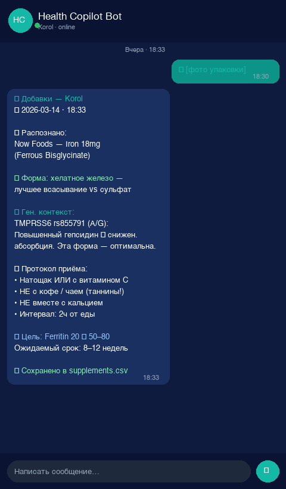
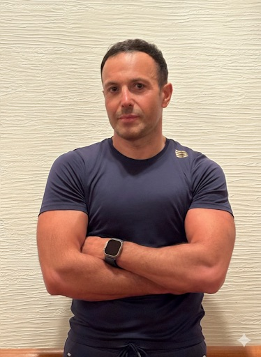

Wearables видят только часть картины
Сон, HRV, пульс, нагрузка и восстановление полезны, но wearables не знают ваши лабораторные маркеры, симптомы, добавки, назначения врача, реакцию на питание и длинную историю решений.
Health Copilot помогает людям, которые уже серьезно занимаются здоровьем, наконец соединить анализы, wearables, дневник, питание и решения в рабочую personal longevity system.
Сон, HRV, пульс, нагрузка и восстановление полезны, но wearables не знают ваши лабораторные маркеры, симптомы, добавки, назначения врача, реакцию на питание и длинную историю решений.
Лаборатории важны, но между сдачами остается огромный слой реальной жизни: режим, питание, тренировки, самочувствие, изменения протокола и эффект этих изменений.
Он может ответить на отдельный вопрос, но сам по себе не создает персональную память, архитектуру данных, daily feedback loop и слой доказательной интерпретации.
Health Copilot нужен именно в точке, где данные уже есть, но еще не превратились в ясное понимание: что для вас реально работает, что связано между собой и что стоит менять дальше.
Система не просто хранит эти слои. Она собирает их в один контур, где сигналы начинают говорить друг с другом и превращаются в гипотезы, приоритеты и понятную ежедневную логику.
Настоящая ценность возникает не в отдельных метриках, а в связях: когда ухудшение восстановления сопоставляется с нагрузкой, самочувствием, лабораторным фоном, питанием и тем, что вы недавно изменили.
Большинство людей останавливается на наблюдении. Здесь появляется missing layer: система, которая помогает не просто смотреть, а принимать решения, проверять их и удерживать логику во времени.
В этой cohort мы не рисуем абстрактный wellness-dashboard. Мы показываем реальные Telegram-артефакты: сообщение, контекст, вывод и действие в одной цепочке.

Ежедневная обратная связь собирает сигналы в один короткий контекст и помогает начать день с ясного действия.

Его задача не заменить врача, а радикально поднять качество разговора. Врач быстрее видит тренды и риски, а не тратит первые минуты на реконструкцию истории с нуля.

Здесь важно не интерпретировать картинку заново, а сохранить связь между едой, исходным контекстом и дальнейшим решением.

Анализы становятся полезны только когда соединяются с историей, питанием и ежедневной обратной связью.

Этот блок сохраняет живой субъективный контекст, который иначе теряется.

Decision tracker фиксирует, что изменили, зачем и какой эффект это дало.
Система связывает персональный контекст человека с research layer и не подает гипотезы как твердые факты. Важные выводы должны иметь понятную опору, а слабые выводы должны быть явно помечены.
Так появляется другое качество доверия: вы понимаете, где у вас твердая опора, где разумная гипотеза, а где рано делать слишком уверенные выводы. Это особенно важно в longevity, где рынок переполнен красивыми, но слабо обоснованными обещаниями.
DNA-лаборатории обычно присылают консьмерскую выжимку и это не равно полезному знанию. Чтобы получить по-настоящему надежный персональный генетический слой, сырые данные должны проходить через несколько стадий: качество данных, клинические панели, pharmaco-слой, nutrigenomics и отдельную проверку противоречий и валидации.
Загрузка исходного файла и первичный quality check, чтобы не строить выводы на невалидных сигналах.
Отбор релевантных SNP, ClinVar и панелей, где важен клинический смысл, а не просто любопытные совпадения.
Отдельный слой про лекарства, метаболизм и нутриентные особенности, где ошибка особенно дорого стоит.
Сопоставление с источниками, evidence grades и разбор конфликтов между исследованиями и интерпретациями.
Только после этого генетика начинает работать в `doctor brief`, `morning brief` и в decision layer.
Генетика сильна не сама по себе, а как часть целой системы. Только в связке с лабораториями, носимыми устройствами, питанием и историей решений она начинает реально помогать, а не просто впечатлять.

Строю AI-инструменты и продукты, которые помогают людям принимать более ясные решения. Health Copilot - один из продуктов AI Automation Studio, и я веду этот cohort лично.
Моя задача в этой группе - помочь вам собрать не просто набор советов, а рабочую personal longevity system: с ежедневной обратной связью, артефактами, research layer и понятной логикой действий.